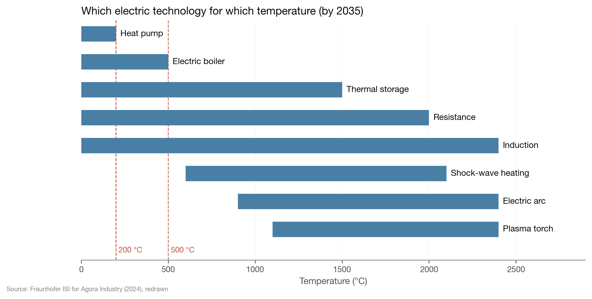

Stocker la chaleur dans l'industrie : comment ça marche, ce que ça coûte, où on en est
Comment une batterie de chaleur charge une masse (briques, roche, sable, sel fondu) aux heures d'électricité bon marché et rend de la vapeur, avec 90 à 98 % de rendement ; les neuf familles de techniques et leurs températures ; pourquoi la capacité coûte peu (50 à 200 €/kWh installé, 5 à 10 fois moins qu'une batterie) alors que la chaleur livrée reste chère (électricité et tarif de réseau) ; des TRL à lire avec leur auteur et leur date ; et ce que ça change pour le cas E : chaudière surdimensionnée, puissance souscrite, concurrence de l'hybride gaz-électricité.
1. La question et la réponse
La question. Une usine a besoin de vapeur jour et nuit. L’électricité, elle, est très bon marché certaines heures et très chère d’autres. Peut-on faire de la chaleur avec l’électricité des heures creuses et la rendre au procédé plus tard, et à quel prix ?
La réponse, en trois phrases. Oui : un stockage de chaleur chauffe une masse (briques, roche, sable, sel fondu) avec des résistances électriques quand le courant est bon marché, puis rend de la vapeur ou de l’air chaud à la demande, et 90 à 98 % de l’électricité ressort en chaleur. La capacité de stockage coûte peu, de 50 à 200 € ou $ par kWh pour un système installé, cinq à dix fois moins qu’une batterie électrique. Mais le coût de la chaleur livrée dépend surtout du prix de l’électricité et du tarif de réseau, si bien que le gaz reste souvent moins cher, et les premières installations industrielles n’ont que deux ou trois ans.
Le plan. La section 2 définit les notions, la section 3 dit à quoi sert un stockage de chaleur. Les sections 4 à 7 présentent les techniques, leurs rendements, leurs coûts et leur maturité. La section 8 corrige des idées reçues, la section 9 dit ce que cela change pour le mini-projet sur la vapeur d’une usine. Combien de chaleur consomme l’industrie, et à quelle température : voir La chaleur des usines.
2. Les notions
Batterie de chaleur. Un réservoir isolé qui garde de la chaleur pour la rendre plus tard. Chargé avec de l’électricité, on l’appelle aussi stockage électrothermique (en anglais electrothermal energy storage, ETES) : il entre de l’électricité, il sort de la chaleur.
Trois façons de stocker.
- Chaleur sensible : on chauffe une matière sans la faire changer d’état. L’énergie stockée vaut Q = m · c · ΔT : la masse, fois la capacité thermique de la matière, fois l’écart de température entre l’état chargé et l’état déchargé.
- Chaleur latente : la matière fond à la charge et se solidifie à la décharge.
- Thermochimique : une réaction réversible absorbe la chaleur dans un sens et la rend dans l’autre.
Capacité et puissance. La capacité est l’énergie stockée, en MWh de chaleur (MWh_th). La puissance est le débit de charge ou de décharge, en MW. Leur rapport est la durée. La batterie d’Epyr à Troyes livre 1,3 MW pendant 5 heures, soit environ 6,5 MWh ; celle de Polar Night Energy à Pornainen (Finlande) stocke 100 MWh pour 1 MW, soit 100 heures.
Rendement. Le rendement électricité → chaleur dit quelle part de l’électricité ressort en chaleur utile. Le rendement aller-retour dit quelle part ressort en électricité, si l’on refait du courant avec la chaleur. Un kWh de chaleur (kWh_th) n’est pas un kWh d’électricité (kWh_e).
Coût de capacité et coût de la chaleur. Le coût de capacité est l’investissement par kWh stockable (€/kWh). Le coût actualisé de la chaleur (levelized cost of heat, LCOH) est le coût complet d’un MWh de chaleur livré (€/MWh) : investissement réparti sur la durée de vie, électricité, tarif de réseau, entretien.
TRL. Le niveau de maturité technologique (technology readiness level) va de 1 (l’idée) à 9 (l’usine commerciale qui tourne).
3. À quoi sert un stockage de chaleur
Profiter des heures bon marché. En France en 2025, le prix de gros de l’électricité a été négatif pendant 513 heures (RTE, 2026) et a dépassé 150 €/MWh pendant 278 heures (calcul sur les prix horaires publiés par ENTSO-E), pour une moyenne de 61 €/MWh (CRE, 2026). Un stockage de chaleur charge aux heures basses et décharge le reste du temps : c’est l’arbitrage (voir Les marchés de l’électricité).
L’écart entre heures basses et heures hautes n’est pas une donnée fixe. Il dépend du mix électrique futur et de toutes les autres flexibilités (batteries, électrolyseurs, effacements) qui chercheront les mêmes heures. Plus il y a de stockages, plus l’écart se resserre.
Se brancher sur un renouvelable dédié. Un parc solaire relié directement à l’usine évite une partie du tarif de réseau. Rondo charge ainsi 100 MWh de briques avec un champ solaire de 20 MW en Californie, depuis octobre 2025, à la place d’une chaudière à gaz. Limite : ce stockage est journalier, pas saisonnier. Le solaire produit bien plus l’été que l’hiver ; il faut alors une chaudière d’appoint.
Rendre des services au réseau. Effacement, mécanisme de capacité, réserves : ces revenus baissent le coût de la chaleur de 20 à 40 €/MWh (Systemiq, 2024).
Récupérer la chaleur perdue. Un stockage peut aussi garder la chaleur fatale d’un procédé pour la rendre à un autre, sans électricité. Eco-Tech Ceram stocke à 600 °C la chaleur des fours de tuileries pour leurs séchoirs.
Ce que ce n’est pas. Refaire de l’électricité avec la chaleur stockée ne rend que 44 à 47 % de l’électricité (Systemiq, 2024 ; DOE, 2023 ; RTC/Brattle, 2023). C’est un autre métier, qui se compare à une batterie, pas à une chaudière.
4. Les familles de techniques
Toutes suivent le même schéma. L’électricité entre, en général par des résistances. Une masse garde la chaleur dans une enceinte isolée. Un fluide (air, eau-vapeur, huile) la traverse et emporte la chaleur vers le procédé.
| Famille | Principe | Température de la masse | Chaleur livrée | Exemple en service |
|---|---|---|---|---|
| Briques + air | résistances dans un empilement de briques, air soufflé dans les canaux | plus de 1 000 °C | air chaud, vapeur jusqu’à 100 bar | Rondo (États-Unis), 100 MWh, 2025 ; Epyr (France), 6,5 MWh, 2026 |
| Briques conductrices | le courant traverse la brique elle-même | jusqu’à 1 800 °C | air de 200 à 1 500 °C | Electrified Thermal Solutions (États-Unis), 20 MWh, 2026 |
| Roche ou béton + tubes | la vapeur naît dans un tube noyé dans la masse | 390 à 750 °C | vapeur, huile | EnergyNest (Norvège), 4 MWh chez Yara, 2023 |
| Sable | sable fluidisé par de l’air, ou silo | 400 à 600 °C | vapeur de 120 à 400 °C | Magaldi (Italie), 7,5 MWh, 2025 |
| Sels fondus | le sel passe d’une cuve froide à une cuve chaude | 290 à 565 °C ; 700 °C | vapeur | Kyoto Group (Norvège), 56 MWh en Hongrie, 2025 |
| Très haute température | du carbone incandescent rend sa chaleur en rayonnement | jusqu’à 2 400 °C | chaleur, ou électricité | Antora (États-Unis), 5 GWh, 2026 |
| Changement de phase | un alliage d’aluminium fond et se solidifie | 577 °C | vapeur | MGA Thermal (Australie), démonstrateur de 5 MWh |
| Vapeur et eau | vapeur sous pression ; cuves et fosses d’eau chaude | 255 °C ; moins de 100 °C | vapeur ; eau chaude | technique centenaire ; réseaux de chaleur danois |
| Thermochimique | réaction réversible d’oxydes ou de sels | 500 à 900 °C | — | pilotes seulement |
Températures annoncées par les fournisseurs. Sources : RTC/Brattle (2023), IRENA (2020), DLR (2021), ARENA (2025), communiqués des industriels.
Les familles les plus avancées pour l’industrie sont les solides chauffés par résistance et les sels fondus, hérités des centrales solaires à concentration.

La température de la masse n’est pas celle de la chaleur livrée. Magaldi chauffe son sable jusqu’à 620 °C et livre de la vapeur à 195 °C. Systemiq écrit que le stockage électrothermique est commercial « jusqu’à 400 °C » de chaleur livrée ; RTC/Brattle, « jusqu’à 750 °C » de stockage. Les deux sont justes.
Stocker plus chaud, c’est stocker plus dans moins de matière. D’après Q = m · c · ΔT, monter la masse à 1 000 °C pour un procédé qui veut de la vapeur à 150 °C agrandit l’écart utile, donc réduit la matière à acheter. En échange, l’isolation et les matériaux sont plus exigeants. Pour fixer les idées, un sel fondu stocke environ 200 kWh par m³ pour 250 °C d’écart (DLR, 2021), un accumulateur de vapeur environ 40 kWh par m³ à 30 bar (SINTEF/AIT, 2019).
5. Rendement et pertes
Électricité → chaleur : 90 à 98 % (Systemiq, 2024 ; LDES Council, 2022 ; RTC/Brattle, 2023). Une résistance convertit presque toute l’électricité en chaleur ; les pertes viennent du stockage et de l’échangeur.
Pertes à l’arrêt : environ 1 % par jour pour une grande unité (Agora, 2024) ; une étude du NREL prend 3 % sur 24 heures (Wikoff et al., 2025). Le démonstrateur australien de MGA Thermal (5 MWh) a mesuré une perte d’environ 70 kW, 14 % de sa puissance de charge de 500 kW (ARENA, 2025). Une petite unité perd beaucoup plus qu’une grande, parce que sa surface est grande devant son volume.
6. Ce que ça coûte
6.1 La capacité : l’investissement par kWh stockable
Les chiffres publiés s’étalent sur deux ordres de grandeur, sans que personne se trompe : ils ne chiffrent pas le même périmètre. Le bloc de stockage seul (la matière et son isolation) coûte quelques dollars par kWh. Le système installé ajoute les résistances, le générateur de vapeur, l’ingénierie et la pose.
| Ce qu’on chiffre | Valeur | Source |
|---|---|---|
| Bloc de briques seul (modèle) | 4,55 $/kWh_th, plus 20,67 $/kW de charge et 6,47 $/kW de décharge | Wikoff et al. (NREL), 2025 |
| Sable en silo (potentiel) | environ 2 $/kWh_th | DOE, 2023 |
| Stockage latent pour la vapeur, stockage seul | 24,4 €/kWh | SINTEF/AIT, 2019 |
| Grand stockage à sels fondus | 15 à 80 €/kWh_th | DLR, 2021 |
| Systèmes français air/solide, huile/solide, cuve d’eau | 61 à 67,5 ; 49 ; 60 €/kWh (2030) | ATEE/ADEME, PEPS5, 2023 |
| Système complet avec chaudière électrique (0,5 GWh, 30 MW) | environ 60 $/kWh_th | LDES Council/McKinsey, 2022 |
| Coût installé annoncé par les fournisseurs américains | 85 à 210 $/kWh (2025), 40 à 110 (2030), 20 à 55 (2035) | RTC/Brattle, 2023 |
L’ordre de grandeur à retenir. Un système installé coûte aujourd’hui de 50 à 200 € ou $ par kWh, et les fournisseurs attendent une baisse d’un facteur 2 à 4 d’ici 2035. C’est 5 à 10 fois moins qu’une batterie électrochimique au kWh (Agora, 2024). La facture n’est pas dans la matière, mais dans l’enceinte, la charge électrique, le générateur de vapeur et l’intégration à l’usine.
6.2 La chaleur livrée : le coût actualisé (LCOH)
| Cas | Stockage électrothermique | Chaudière à gaz | Source |
|---|---|---|---|
| France, 2023, charge 6 h par jour | 212 €/MWh (électricité 159, investissement 21, réseau 31) | 120 (moyenne UE) | Systemiq, 2024 |
| France, 2030, même cas | 120 €/MWh (67 + 17 + 34) | 72 (UE) | Systemiq, 2024 |
| Renouvelable dédié, UE, 2030 | 52 €/MWh | 72 | Systemiq, 2024 |
| Texas, 2030 | 42 €/MWh | 19 | Systemiq, 2024 |
| Renouvelable sur site, CO₂ à 100 $/t, 2022 | 30 à 60 $/MWh | 40 à 65 | LDES Council/McKinsey, 2022 |
| Sud-ouest des États-Unis, 2030, chargé au réseau | 14,7 $/MWh au prix de gros ; 94,8 avec un tarif de distribution ancien ; 22,5 avec un tarif « moderne » | 34,6 | RTC/Brattle, 2023 |
Trois leçons.
- L’électricité fait le coût. En France en 2023, 159 des 212 €/MWh sont de l’électricité, l’investissement n’en fait que 21. L’année 2023 suit la crise des prix de 2022 : le même auteur donne 120 €/MWh en 2030.
- Le tarif de réseau peut tout décider. RTC/Brattle passe de 22,5 à 94,8 $/MWh de chaleur, pour le même stockage, en changeant seulement la structure du tarif. Un tarif qui fait payer la puissance maximale appelée punit l’usage flexible, qui appelle une forte puissance quelques heures (voir Les tarifs d’accès au réseau).
- Le gaz reste moins cher dans le cas générique, en Europe comme au Texas, sans prix du carbone élevé. Les cas favorables cumulent un renouvelable dédié ou des prix très bas, des services au réseau et un bon dimensionnement : Systemiq trouve jusqu’à 50 % de baisse sur des cas réels optimisés.
7. Maturité
Un TRL n’a de sens qu’avec son auteur et sa date.
| Famille | Un expert (2024) | PEPS5 (2023) | Agora (2024) | JRC (2024) |
|---|---|---|---|---|
| Briques et roches + air | 3 à 6 selon le fournisseur | 6 à 9 | 7 à 9 | 8 à 9 |
| Béton + tubes | 6 | — | — | — |
| Sable | 5 | — | — | — |
| Sels fondus | 5 | — | 7 à 9 | 8 à 9 |
| Changement de phase | « trop cher pour l’instant » | — | — | 5 à 9 |
| Thermochimique | « trop cher pour l’instant » | — | — | 2 à 5, jusqu’à 7 |
| Eau (cuves, fosses) | — | 7 à 9 | — | 8 à 9 |
Systemiq (février 2024) place l’ensemble en début de phase commerciale (TRL 7), avec plus de 40 fournisseurs.
- Les notes de l’expert sont celles d’un acheteur
potentiel et datent de juin
- Depuis, Magaldi, Rondo, Electrified Thermal Solutions, Epyr et Antora ont mis en service des installations industrielles (septembre 2025 à mai 2026). Le TRL 3 donné à Electrified Thermal Solutions est donc dépassé.
- Les TRL élevés des synthèses (Agora, JRC) mélangent des techniques mûres (eau chaude, sels fondus du solaire) et des batteries de chaleur récentes.
- Les abandons comptent. Siemens Gamesa arrête en 2022 son démonstrateur de 130 MWh de roche à Hambourg, faute de marché ; Stiesdal abandonne GridScale en 2023 ; Azelio fait faillite en 2023 ; Lumenion est en procédure d’insolvabilité depuis 2025. Les trois premiers visaient à refaire de l’électricité.
- Ce qui reste à prouver, selon un expert en 2024 : la continuité de la vapeur au moment des bascules (un procédé chimique ne tolère pas deux ou trois minutes sans chaleur), la tenue des matériaux à un cycle par jour pendant des années, et la confiance des exploitants.
8. Quelques idées reçues
- « La batterie d’Epyr produit de la chaleur à 40-50 €/MWh. » Non : c’est le prix de l’électricité sous lequel elle devient compétitive face à un gaz à 20-25 €/MWh (Révolution Énergétique, 2026).
- « Rondo livre la chaleur à 30 $/MWh. » C’est un objectif de coût du service de stockage, pas de la chaleur livrée, et le client actuel n’en est pas près selon le dirigeant (Canary Media, 2025).
- « Un stockage à 50 €/kWh fait de la chaleur à 50 €/MWh. » Un coût de capacité et un coût de chaleur ne se comparent pas. Un kWh électrique et un kWh de chaleur non plus : le DOE chiffre les sels fondus à 88 $ par kWh électrique restitué par turbine (DOE, 2023).
- « Le stockage de chaleur existe déjà en masse. » Le monde en comptait environ 234 GWh fin 2019, surtout de l’eau chaude pour les réseaux de chaleur et les sels fondus des centrales solaires. Le stockage haute température pour l’industrie était alors proche de zéro (IRENA, 2020).
- « Le marché est de 3 100 TWh d’ici 2030. » C’est un potentiel calculé par Systemiq (2024) pour la chaleur sous 400 °C, pas une prévision de ventes.
9. Ce que ça change pour le mini-projet sur la vapeur d’une usine
Le cas du cours part d’une usine dont la chaudière à gaz arrive en fin de vie. Il compare le gaz, la chaudière électrique seule, la chaudière électrique avec un stockage de chaleur, et l’hybride : les deux chaudières, choisies heure par heure selon le prix. Cinq clés pour lire ses résultats.
- Avec un stockage, la chaudière électrique dépasse le besoin. Pour remplir le stock pendant les quelques heures bon marché, il faut charger plus vite que l’usine ne consomme. Regardez toujours la puissance (MW) à côté de la capacité (MWh).
- Cette puissance se paie au réseau. Un coût de puissance souscrite (la puissance réservée auprès du gestionnaire de réseau) pénalise précisément la chaudière surdimensionnée et fait redescendre la taille du stock.
- Le coût de capacité compte moins que le prix de l’électricité. Le cas prend un stockage bon marché, 24,4 €/kWh (stockage seul, SINTEF/AIT, 2019) ; un système installé coûte plutôt 50 à 200 €/kWh. Faites varier ce chiffre et comparez son effet à celui des séries de prix.
- L’hybride est un concurrent direct du stockage. Garder la chaudière à gaz à côté de la chaudière électrique donne déjà une grande part de la flexibilité, sans rien stocker. Un stockage ne gagne que s’il apporte plus que cela.
- Le gain dépend d’un écart de prix qui peut se refermer. Le stockage déplace la chaleur de quelques heures, pas d’une saison, et plus il y aura de flexibilités, plus l’écart entre heures basses et hautes risque de se resserrer. Relisez un résultat sous plusieurs futurs de prix.
Pour la pompe à chaleur haute température, autre option du cas, voir La chaleur des usines ; pour les taxes sur l’électricité et le gaz, Les taxes sur l’énergie.
10. Ce qu’il faut retenir
La technique n’est plus le premier verrou. Solides chauffés par résistance et sels fondus ont des installations industrielles depuis 2023-2026, du mégawattheure au gigawattheure. Ils rendent 90 à 98 % de l’électricité en chaleur et perdent environ 1 % par jour à grande échelle.
La capacité est bon marché, la chaleur ne l’est pas. Un système installé coûte 50 à 200 € ou $ par kWh, 5 à 10 fois moins qu’une batterie. Mais la chaleur livrée coûte surtout son électricité et son réseau ; le tarif d’acheminement peut quadrupler ce coût, et le gaz reste moins cher dans les cas génériques européens.
Une maturité se lit avec une date et un auteur, et la liste des abandons est aussi longue que celle des succès.
Pour une usine, le stockage ne se juge pas seul. Il se compare à l’hybride gaz-électricité, se dimensionne en puissance autant qu’en énergie, et sa valeur dépend d’un écart de prix que les autres flexibilités viendront réduire.
11. Sources
- Agora Industry et Fraunhofer ISI, Direct electrification of industrial process heat, 2024, § 3.1.8 et tableau 9, https://www.agora-industry.org.
- ARENA et MGA Thermal, Thermal Energy Storage Project, Final Project Knowledge Sharing Report, 2025, https://arena.gov.au/assets/2025/10/MGA-Thermal-Thermal-Energy-Storage-Project-Final-Project-Knowledge-Sharing-Report.pdf.
- ATEE, ADEME et DGEC, Étude PEPS5 sur l’intérêt du stockage d’énergie et du power-to-X, 2023, tableaux 18 à 35.
- Bauer T., Odenthal C., Bonk A. (DLR), « Molten Salt Storage for Power Generation », Chemie Ingenieur Technik 93 (2021), https://elib.dlr.de/141650/.
- Canary Media, article sur Rondo, 22 octobre 2025, https://www.canarymedia.com.
- CRE, Rapport de surveillance des marchés de gros 2025, 2026.
- ENTSO-E, plateforme de transparence, prix day-ahead horaires de la France, 2025, https://transparency.entsoe.eu.
- IRENA, Innovation Outlook: Thermal Energy Storage, 2020, https://www.irena.org/-/media/Files/IRENA/Agency/Publication/2020/Nov/IRENA_Innovation_Outlook_TES_2020.pdf.
- JRC, Clean Energy Technology Observatory: Novel Energy Storage Technologies in the EU, EUR 40077, 2024, https://publications.jrc.ec.europa.eu/repository/bitstream/JRC139267/JRC139267_01.pdf.
- LDES Council et McKinsey, Net-zero heat: Long Duration Energy Storage to accelerate energy system decarbonization, 2022, https://ldescouncil.com/wp-content/uploads/2025/05/221108_NZH_LDES-brochure.pdf.
- Révolution Énergétique, article sur Epyr, 2 juin 2026, https://www.revolution-energetique.com.
- RTC et The Brattle Group, Thermal Batteries: Opportunities to Accelerate Decarbonization of Industrial Heat, 2023, tableaux 1, 3 et 4, https://www.brattle.com/wp-content/uploads/2023/10/Thermal-Batteries-Opportunities-to-Accelerate-Decarbonization-of-Industrial-Heat.pdf.
- RTE, Bilan électrique 2025, 2026, p. 68.
- SINTEF et AIT (Kauko H., Drexler-Schmid G.), Thermal storage for improved utilization of renewable energy in steam production, HighEFF, 2019, https://www.sintef.no/globalassets/project/higheff/2019-05-08_higheff-acm_kauko_tes-for-re.pdf.
- Systemiq, Catalysing the global opportunity for electrothermal energy storage, avec Breakthrough Energy, 2024, fig. 7 et 8.
- US DOE, Thermal Energy Storage Technology Strategy Assessment (DOE/OE-0038), 2023, https://www.energy.gov/sites/default/files/2023-09/9_Technology%20Strategy%20Assessment%20-%20%239%20Thermal%20Energy%20Storage_508.pdf.
- Wikoff H.M. et al. (NREL), « Benchmarking thermal energy storage cost for industrial process heat », Applied Energy 402 (2025) 126873, https://www.osti.gov/pages/servlets/purl/3013276.
- Projets industriels (Rondo, Epyr, Electrified Thermal Solutions, EnergyNest, Magaldi, Kyoto Group, Antora, Polar Night Energy, Eco-Tech Ceram) : communiqués des entreprises et de leurs clients, 2023 à 2026.
12. Vidéos, billets et posts sur le même sujet
Des vidéos courtes, des billets de blog et des posts LinkedIn de l’auteur reprennent des points de cette note.
- Chaleur dans l’industrie 5/6 — stocker la chaleur : briques, sable, sel, carbone (vidéo, 2 min ; la série « Décarbonation de la chaleur dans l’industrie ») : les techniques de stockage de chaleur : briques, sable, sel fondu, carbone.
- Chaleur dans l’industrie 6/6 — brancher l’usine au réseau, et garder le gaz à côté de l’électricité (vidéo, 2 min) : le raccordement de l’usine au réseau et l’intérêt de garder le gaz à côté de l’électricité, deux questions qui décident aussi d’un stockage.
Télécharger la version PDF (les liens y restent actifs).